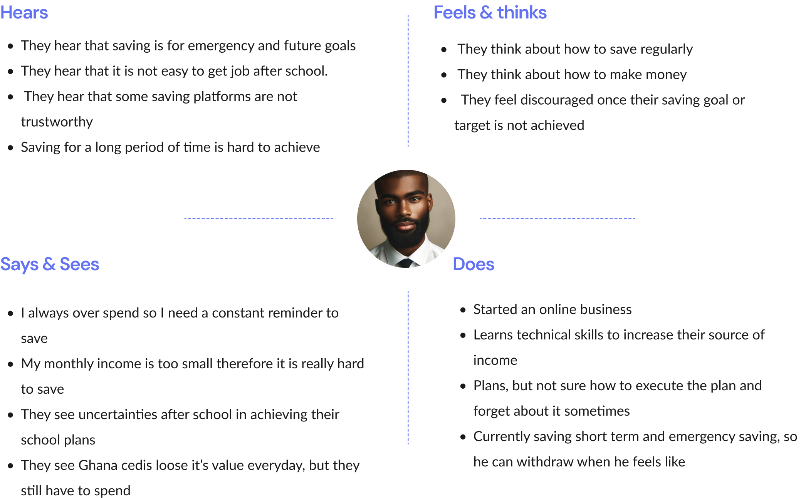

SantanSave

Web + Mobile App
duration: February,2023 -
platform: Web + Mobile App
Collaborators: This is an independent project
In an eight-week school project, I collaborated with eight coursemates to improve the UX/UI of Hilfegeschichten, a web platform for sharing personal stories about seeking and receiving help in city of Siegen. Our team conducted research, generated new ideas, and developed wireframes and prototypes to refine the existing website. We focused on enhancing accessibility, optimizing text, images, and colors to ensure inclusivity for all users. Through our efforts, we polished the website’s design and functionality, making significant improvements to usability and user engagement.
Semi-structured Interviews
Wireframing
Prototyping
Brainstorming
Usability studies
User Journey
Storyboarding
Figma
Miro
Adobe Illustrator
Google Teams
Visual studio
SantanSave
SantanSave is a long term saving application that helps undergraduate university students to save and invest money towards their financial goals all through the duration of their degree. The app aims to educate students on financial literacy, encourage healthy saving habits, and provide accessible investment opportunities tailored to their needs. Also, the app provides several features such as multiple saving goals, automated savings, financial education, job opportunities and reward programs to help them invest, earn and save better`
Design Process

Problem Statement
Undergraduate students struggle to balance the need to save money with the competing demands of college life. Many undergraduates are faced with significant expenses such as tuition, textbooks, housing and food. While some may not have a steady income, as many of them work part-time jobs or may rely on financial aid or support from their families.
Solution To Problem
Undergraduate students struggle to balance the need to save money with the competing demands of college life. Many undergraduates are faced with significant expenses such as tuition, textbooks, housing and food. While some may not have a steady income, as many of them work part-time jobs or may rely on financial aid or support from their families. This makes it challenging to save consistently and build a strong financial foundation for the future
Product Goals
User Research
Research and Analysis
User research focuses in understanding the needs, behaviors and motivation of user in order to design products that meet their needs and improve their expenses. For th product, to understand the challenges undergraduates face with saving I used three research methods: Competitive Analysis, Quantitative Research & Qualitative Research method
Competitive Analysis

Quantitative Research
Here, I asked them questions and gave them options to select from. So I created a questionnaire using Google from and got responses from 41 undergraduates students to get direct answers to some questions like their saving habits and consistency, as well as financial literacy levels
Survey
Quanlitative Research
At this stage, I gave users the opportunity to speak their minds and give them suggestions. I used Google Meet video to carry out online interview which had 10 participants with the aims of finding out their current saving method, saving habit, level of financial literacy and how they want to make their current experience better.
Some Questions and Reponses from the research
- What are your opinions or conceptions about saving as a student?
- Can you save for a long period of time (example 4 years) without withdrawing out of your savings?
- What plans do you have to sustain yourself financially after graduation?
- What challenges have you encountered with saving?
- As a students do you think you can be consistent with savings?
- What encourages you to save?
User Persona
Empathy Map
The empathy map was developed to gain a deeper understanding of the target users—their behaviors, needs, pain points, and motivations. It helped me visualize the user’s mindset and guided design decisions to ensure a user-centered experience.
Major Pain Points
- Low income so they don’t really know how much to be saving
- Overspending and sometimes end up buying things they don’t need
- They are not sure where to save their money and be assured total safety
- Buying, feeding and transportation are the major reasons why they can’t save
- Fully depends on allowance to save
Affinity Map
User Flow

Information Architecture
Feature Flow
The feature flow of this project was designed to ensure a seamless and intuitive user experience, guiding users from entry points to key actions with minimal friction. Starting from the onboarding process, users are introduced to the app’s core value propositions through a clean, engaging walkthrough.
Low Fidelity prototype
The low-fidelity prototype served as the initial visual and structural representation of the product's interface and user flow. It focused on layout, functionality, and user interactions without detailed visuals or branding. Using grayscale wireframes, I mapped out the core screens and interactions, including the onboarding process, main dashboard, feature-specific pages, and navigation patterns. This stage allowed for rapid ideation and feedback, enabling early user testing and quick iterations. The goal was to validate the overall structure, usability, and logic of the experience before moving into high-fidelity design. It also served as a collaborative tool during discussions with stakeholders and developers to align on functionality and user needs.


About features on the App
Save Screen
The save screen enable users to set and track their saving goals. It allows users to define specific target such as saving for tuition, business plan, trips, after school events etc. Users can input their desired amount, set a target date, and the app will help monitor their progress. The save feature also include tools like the Saving Calculator, Currency converter which help users manage their savings effective and efficiently
Create a Savings Plan
This feature assists undergraduate students in developing personalized saving plan that align to their financial goals. It allows users to define specific targets, set timelines and track progress towards their objectives. The app offers budgeting tools, saving calculator and insight on expenditure pattern to help students create realistic and achievable plans
Talk To Advisors
This feature offers a direct channel for users to seek guidance from financial advisors or experts. It provides a secure messaging platform where students can ask question, seek personalized guidance on saving, investing, managing their finances, and receive professional recommendations related to their financial goals.
Job board
The job board section is an exclusive job application portal for undergraduate students. It aggregates job listings from various sources including internships, part-time jobs and entry level positions. Students can search for opportunities relevant to their field of study, filter based on job type and even apply directly through the app
Community Forum
The community forum feature fosters a sense of belonging and collaboration among app users. It offers a social platform where students can connect with their peers, share experiences and seek advice on personal financial and saving strategies. Users can participate in discussion forums, join interest groups or even organize events related to financial literacy.
Investment page
The feature guide students to unlock their financial potential with our comprehensive investment tools. Whether you're a seasoned investor or just starting your journey, the platform offers the resources and support you need to make informed decisions and grow your wealth.
Usability Testing
After the visual design was completed. I conducted a usability test with 2 participants, to check if the application is usable and accessible to my targeted audience which are undergraduate students. This session was conducted using the maze website where the Figma prototype was uploaded for user to access and navigate through. The test was conducted on Google Meet video call where the participants were given the following tasks while I observed how they navigated through the application.
Insights from testing
After the testing phase, I was able to successfully gather some insights from the insights from the general observation of the users about the application and their experiences through out their trails.
Conclusion
In conclusion, this UI/UX design project and case study effectively addresses the financial challenges faced by students, offering intuitive tools for saving money and making informed investment decisions. By focusing on user-centric features such as personalized budgeting tips, easy-to-understand investment guides, and real-time financial tracking, we have created a seamless and engaging experience that empowers students to take control of their financial future. This project also served as a valuable learning platform for myself, enhancing my skills in user experience design and financial technology. The positive feedback from our user testing highlights the app's potential to make a significant impact on students' financial literacy and stability, paving the way for a more secure and prosperous future for young adults.